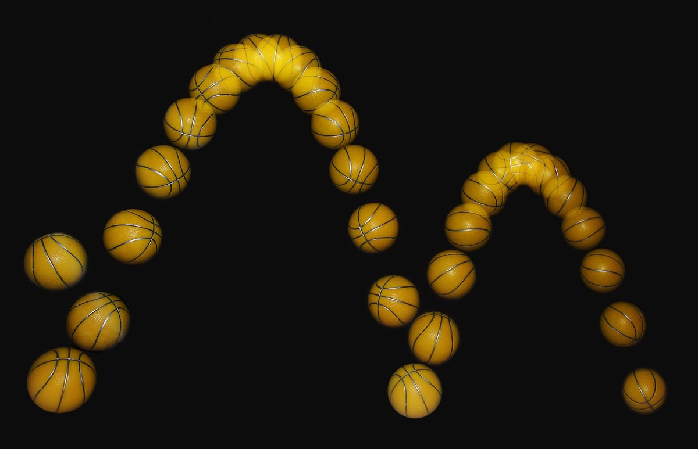

Frame-based animation is a rapid sequence of still images, called frames, shown one after another. Your eye and brain blend the small differences between frames into what looks like continuous motion. Look at the six frames below of a ball bouncing. Read them left to right as separate still images first, then imagine them flashing by quickly.


Real stroboscopic photograph of an actual bouncing ball. Pick out roughly six positions along this arc, high on one side, low in the middle, high again on the other, and you have the keyframes for a six-frame animation loop like the one you will plan in this module.
Before you open Pixlr E, decide what is going to move and how. A frame rate, measured in frames per second (fps), describes how many still images play in one second. Feature films typically run near 24 fps, but a short looping GIF you build by hand does not need anywhere close to that. A clean, readable loop of 4 to 8 frames played back at a slow, even pace is a realistic and effective scope for this project. Fewer frames simply means each one stays on screen a little longer.
Pick one small, repeatable action. Good choices for a first loop include:
- A shape bouncing up and down
- An eye blinking open and closed
- A simple walk-cycle-style motion (two legs swapping position)
- An icon or shape growing and shrinking
Once you have an action in mind, storyboard it before you build anything digital. Sketch a small box for each frame, in order, on paper or in a simple planning document, and rough out what changes from box to box. This costs you five minutes and saves you from redrawing frames later because the motion did not read the way you expected.
A believable loop depends on consistent timing: every frame should stay on screen for the same length of time. If most frames get an even beat but one frame lingers twice as long, the eye catches the pause and the whole loop looks jerky instead of smooth. Decide on one frame delay before you assemble your GIF and use it for every frame.
Keeping each frame lined up: the opacity workaround
Professional animation software often includes onion skinning, a tool that shows a faded, ghosted view of the previous frame while you draw the next one, so your new drawing lines up correctly. Pixlr E does not have a dedicated onion-skin feature, but you can recreate the same logic using its Layers panel:
- Duplicate the layer containing your previous frame.
- Lower that duplicate layer's opacity (try 30 to 40 percent) so it becomes a faint reference.
- Draw your next position on a new layer above it, nudging your shape relative to the faded reference underneath.
- Hide or delete the faded reference layer, and set your new frame's own layer back to full opacity before you export.
Exporting each frame
Pixlr E exports one flat image at a time, so build and export each frame as its own separate PNG: frame1.png, frame2.png, and so on. Keep the canvas size identical across every frame. If one frame is a different size than the rest, it will not line up when the frames are combined.
Assembling the frames into a GIF
Pixlr E builds individual images, not animated files, so the last step happens in a separate free browser-based GIF maker. Many free options exist online; the general workflow is the same across nearly all of them:
- Upload your exported PNG frames in the correct order.
- Set the frame delay (speed) to the same value for every frame, for even timing.
- Set the animation to loop continuously.
- Download the finished
.giffile.
Animation is a series of decisions repeated many times: what changes from one still image to the next, and how long each one stays on screen. A plan on paper, consistent timing, and a simple workaround for lining up your frames are enough to turn a handful of PNGs into a believable loop. In this module you plan and build the frames. In Module 30 you refine the timing and finish the file.